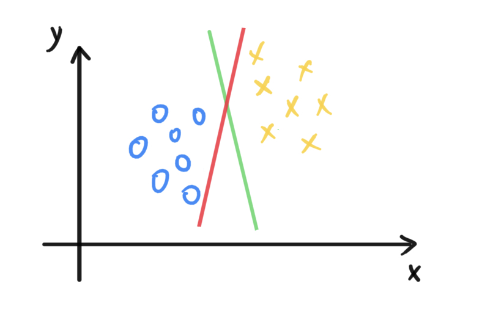

拉普拉斯平滑
问题引入
在上一节中，我们使用朴素贝叶斯来解决垃圾邮件分类问题。我们设 \(x\) 表示邮件内容特征，\(x\) 的每一个分量（取值0或1）表示词典中对应位置的单词是否出现，\(y\) 表示该邮件是否为垃圾邮件。我们假设\(P(x \mid y )\) 和 \(P(y)\) 都遵循伯努利分布，因此参数有
- \(\phi_{j \mid y = 1} = P(x_j = 1 \mid y = 1)\)
- \(\phi_{j \mid y = 0} = P(x_j = 1 \mid y = 0)\)
- \(\phi_y = p(y = 1)\)
$$
\[\begin{aligned} &\phi_y \ \ \ \ \ \ = \frac{\sum\limits_{i=1}^m \mathcal{I}(y^{(i)} = 1)}{m} \\ & \phi_{j \mid y = 1} = \frac{\sum\limits_{i=1}^m \mathcal{I}(x_j^{(i)} = 1, y^{(i)} = 1)}{\sum\limits_{i=1}^m \mathcal{I}(y^{(i)} = 1)} \\ & \phi_{j \mid y = 0} = \frac{\sum\limits_{i=1}^m \mathcal{I}(x_j^{(i)} = 1, y^{(i)} = 0)}{\sum\limits_{i=1}^m \mathcal{I}(y^{(i)} = 0)} \\ \end{aligned}\]
$$
尽管这些值都是通过计算得到的，但其实一打眼看上去也很好理解。以\(\phi_{j \mid y=1}\)
为例，其最优值计算公式的分母 \(\sum\limits_{i=1}^m \mathcal{I}(y^{(i)} =
1)\) 表示“训练数据集中垃圾邮件的数目”，\(\sum\limits_{i=1}^m \mathcal{I}(x_j^{(i)} = 1,
y^{(i)} = 1)\) 表示“包含词典中第 j
个单词的垃圾邮件的数量”。得这些参数的最优值，也就得到了\(P(x|y)\) 和 \(P(x)\)
。因此当我们预测时，就可以套用下面的公式
\[
\begin{aligned}
P(y=1\mid x) &= \frac{P(x\mid y=1) P(y=1)}{P(x\mid y=1) P(y=1) +
P(x\mid y=0) P(y=0)} \\
&= \frac{\prod\limits_{j=1}^{n} P(x_j\mid y=1)
P(y=1)}{P(\prod\limits_{j=1}^{n}x_j\mid y=1) P(y=1)
+\prod\limits_{j=1}^{n} P(x_j \mid y=0) P(y=0)}
\end{aligned}
\]
我们考虑这样一个情况——假设词典中第 k
个单词在训练集所有邮件里都没有出现过，即\(P(x_k = 1 | y=1) = P(x_k \mid y = 0) =
0\)。假设预测时出现一封包含该单词的邮件，此时我们计算 \(P(y = 1 \mid x)\) 会得到
\[
P(y=1|0) = \frac{0}{0 + 0}
\]
显然，我们得不到一个有意义的概率值。那么问题的根源在哪里呢?
根源剖析
通过观察我们可以发现，\(P(x_k = 1 | y=1) = P(x_k \mid y = 0) = 0\) 是有问题的。根据概率论的知识我们知道，“某个事件的概率为 0 ” 表示 “该永远不会发生”。\(P(x_k = 1 | y=1)\) ，也就是\(\phi_{k | y=0}\)，是我们完全根据训练集的数据计算得到的。我们不能奢求训练集可以涵盖所有的情况，因此不能保证垃圾邮件中永远不可能出现 \(x_k\) 对应的单词。所以， \(P(x_k = 1\mid y=1)\) 不能是 \(0\)，而是应该是一个比较小的非负值。
为了达到这个目的，我们需要在计算 \(\phi_{j \mid y=1}\) 的时候做一些“手脚“——也就是使用拉普拉斯平滑（Laplace Smoothing）。
问题解决
绕了这么大一圈，终于引出拉普拉斯平滑。但是别急，我们需要先看一个拉普拉斯平滑的简单案例。假设有一个足球队A，该球队先前和B、C、D、E、F五个队伍都打过比赛，数据如下
| 对手 | 结果 |
|---|---|
| B | 输 |
| C | 输 |
| D | 输 |
| E | 输 |
| F | 输 |
下周A队要和G队打比赛，A队胜利的概率有多大？很显然，我们可以根据历史数据对A的胜率进行预测，即
\[
P(A队打赢G队) = \frac{A队赢的次数}{A队赢的次数+A队输的次数} = \frac{0}{0
+ 5} = 0
\]
这里出现了和刚才一样的问题 ——
只通过历史数据不能完全推断未来的数据，因此不能100%断定A队一定输（万一人家奋发图强了呢）。为了解决该问题，拉普拉斯平滑的做法是：将A队赢的次数增加1，A队输的次数也增加1，这样计算出来的概率就不是0了，即
\[
P(A队打赢G队) = \frac{A队赢的次数 + 1}{A队赢的次数 + 1+A队输的次数 + 1}
= \frac{1}{7}
\]
将该思想运用在垃圾邮件分类问题中 \(\phi_{j\mid
y=1}\) 和 \(\phi_{j\mid y=0}\)
的计算上，有
\[
\begin{aligned}
\phi_{j \mid y = 1} &= \frac{\sum\limits_{i=1}^m
\mathcal{I}(x_j^{(i)} = 1, y^{(i)} = 1) + 1 }{\sum\limits_{i=1}^m
\mathcal{I}(y^{(i)} = 1) + 2 } \\
\phi_{j \mid y = 0} &= \frac{\sum\limits_{i=1}^m
\mathcal{I}(x_j^{(i)} = 1, y^{(i)} = 0) + 1 }{\sum\limits_{i=1}^m
\mathcal{I}(y^{(i)} = 0) + 2 }
\end{aligned}
\]
泛化
更一般的，假设特征 \(x\)
有多个分量，并且每个分量取值有k个——即\(x \in
\{1, 2, \dots, k\}\) 。根据朴素贝叶斯的思想，\(P(x \mid y)\)的计算公式为——
\[
P(x \mid y) = \prod_{j=1}^n P(x_j \mid y)
\]
我们可以根据历史数据预测 \(P(x_j = x* \mid y =
y*)\) 的值，有
\[
P(x_j = x^*\mid y = y^*) = \frac{\sum\limits_{i=1}^m
\mathcal{I}(x_j^{(i)} = x^* \mid y = y^*)}{\sum\limits_{i=1}^m
\mathcal{I}(y=y^*)}
\]
应用拉普拉斯平滑，我们可以改写\(P(x_j = k \mid
y = y*)\) 的计算公式，即
\[
P(x_j = x^*\mid y = y^*) = \frac{\sum\limits_{i=1}^m
\mathcal{I}(x_j^{(i)} = x^* \mid y = y^*) + 1}{\sum\limits_{i=1}^m
\mathcal{I}(y=y^*) + k}
\]
两种事件模型
多元伯努利事件模型
对于以前提到的“垃圾邮件分类任务”，我们用 \(x\) 表示邮件内容特征，\(x\)
的每一个分量（取值0或1）表示词典中对应位置的单词是否出现。假设词典为 [a,
English， I， like，zoo]，维度为5。有一封邮件的内容为“I like
Englist”，则对应的 \(x\) 就是
\[
x = \begin{bmatrix}
0 &1 & 1 & 1 & 0
\end{bmatrix}^T
\]
这种模型我们称作“多元伯努利事件模型”。在该模型中，\(x\) 的维度为词典的规模，即\(x \in \{0,
1\}^{\#dict}\)。该模型的缺点也很明显，就是我们只知道某个单词是否存在，无法得知该单词的具体数量，另外单词的位置我们也无法得知。
多项事件模型
为了解决上述的问题，我们换用另一种\(x\) 的表示方法。假设词典是这样的
| Index | Word |
|---|---|
| \(\vdots\) | \(\vdots\) |
| 56 | English |
| \(\vdots\) | \(\vdots\) |
| 129 | I |
| \(\vdots\) | \(\vdots\) |
| 234 | like |
| \(\vdots\) | \(\vdots\) |
那么对应的\(x\) 可以写作
\[
x = \begin{bmatrix}
56 & 129 & 234
\end{bmatrix}^T
\]
很容易可以看出，\(x\)
维度为“邮件的长度”，\(x\)
的每一个分量表示“邮件对应位置的单词在词典中的下标”。我们把这种模型称作"多项事件模型"。该模型中\(P(y \mid x)\)
的计算公式如下所示（其中n表示邮件长度）
\[
\begin{aligned}
P(y \mid x) &= \frac{P(x \mid y) P(y)}{P(x)}\\
&=\frac{\prod\limits_{j=1}^{n}P(x_j \mid y) P(y)}{P(x)}
\end{aligned}
\]
其实本质上需要对 $P(x_j y) $ 和 \(P(y)\)
进行预测。假设这两个概率都遵循伯努利分布，则可以设置以下参数
- \(\phi_y = P(y=1)\)
- \(\phi_{k \mid y=0} = P(x_j = k \mid y=0)\)
- \(\phi_{k \mid y=1} = P(x_j = k \mid y=1)\)
可以发现，我们已经做出了如下假设——邮件中每个位置出现单词 \(k\)
的概率都是相同的。我们极大化联合似然概率 \(P(x, y) = P(x \mid y) P(y)\)
，可以得到参数的估计值
\[
\begin{aligned}
\phi_y &= \frac{\sum\limits_{i=1}^n \mathcal{I}(y^{(i)}=1)}{m} \\
\phi_{k \mid y=0}& = \frac{\sum\limits_{i=1}^n
(\mathcal{I}(y^{(i)}=0)\sum\limits_{j=1}^{m}\mathcal{I}(x_j^{(i)})=k)}{\sum\limits_{i=1}^n
\mathcal{I}(y^{(i)}=0)\cdot n_i} \\
\phi_{k \mid y=1}& = \frac{\sum\limits_{i=1}^n
(\mathcal{I}(y^{(i)}=1)\sum\limits_{j=1}^{m}\mathcal{I}(x_j^{(i)})=k)}{\sum\limits_{i=1}^n
\mathcal{I}(y^{(i)}=1)\cdot n_i}
\end{aligned}
\]
上面公式中\(n_i\) 表示训练数据集中第 i
封邮件的长度，也就是 \(x^{(i)}\)
的维度。当然，我们可以应用拉普拉斯平滑，将\(\phi_{k\mid y=0}\) 改写成如下形式，\(\phi_{k \mid y=0}\) 同理。
\[ \phi_{k \mid y=0} = \frac{\sum\limits_{i=1}^n (\mathcal{I}(y^{(i)}=0)\sum\limits_{j=1}^{m}\mathcal{I}(x_j^{(i)})=k) + 1}{\sum\limits_{i=1}^n \mathcal{I}(y^{(i)}=0)\cdot n_i + 词典长度} \]
支持向量机简介
支持向量机（Support Vector Machine，SVM）是一种机器学习算法，可以用于分类和回归问题。它通过在高维空间中寻找一个最优的超平面，将不同类别的样本实例分开。在支持向量机中，数据点被看作是高维空间中的向量，不同类别的数据点被分别标记为正样本（+1）和负样本（-1）。SVM的目标是找到一个超平面，使得离该平面最近的数据点的距离最大化，这些离超平面最近的数据点就是支持向量（Support Vector）。
另外，支持向量机还可以将一个简单的特征集（如\([x_1, x_2]\)），映射到一个高维的特征集(如\([x_1, x_2, x_1^2, x_2^2, x_1x_2]\))，从而找到一个非线性的边界。
特殊记号
标签 \(y \in \{-1, +1\}\)
h 预测的值在 \(\{-1, +1\}\) 之中
\[ g(z) = \begin{cases} 1, & z \ge 0 \\ -1, & z < 0 \end{cases} \]\(h_{w, b}(x) = g(w^Tx + b)\)，其中 \(w \in \mathbb{R}^n\)，\(b \in \mathbb{R}\)
Functional margin
Functional margin可以看做数据点到由 \((w,
b)\) 决定的超平面的距离的一种度量。对于一个数据点\((x^{(i)}, y^{(i)})\)，其对应的Functional
margin定义如下：
\[
\hat{\gamma}^{(i)} = y^{(i)} (w^Tx^{(i)} + b)
\]
根据\(\hat{\gamma}^{(i)}\)
的定义也定看出，当\(\hat{\gamma}^{(i)} >
0\) 时，表示\(h(x^{(i)}) =
y^{(i)}\)。我们希望，我们的分类器可以达到一个较大的 Functional
Margin， 即\(\hat{\gamma}^{(i)} \gg
0\)，也就是说，
- 当\(y^{(i)} = 1\) 时，我们希望 \(w^Tx^{(i)} + b \gg 0\)
- 当\(y^{(i)} = -1\) 时，我们希望 \(w^Tx^{(i)} + b \ll 0\)
对于整个数据集来说，其 Functional margin 可以被定义为
\[
\hat{\gamma} = \min_{i} \hat{\gamma}^{(i)}
\]
当然，我们可以采取一种trick 来增加\(\hat{\gamma}^{(i)}\) 的值——即把 \(w\) 和 \(b\) 同时增大相同的倍数，这样\(\hat{\gamma}^{(i)}\)
也会增大相同的倍数，但是边界的位置不会改变。为了解决这个问题，我们可以增加约束，一种是限制
\(||w|| = 1\) ，另一种是\(w = \frac{w}{||w||}, b =
\frac{b}{||b||}\)。
Geometric margin
Geometric margin 也是数据点到由 \((w,
b)\)
决定的超平面的距离的一种度量，其实就是数据点到超平面的欧几里得距离。对于一个数据点\((x^{(i)}, y^{(i)})\)，其对应的 Geometric
margin 定义如下：
\[
\gamma^{(i)} = \frac{y^{(i)} (w^Tx^{(i)} + b)}{||w||}
\]
结合 Functional margin 的定义，我们可以发现
\[
\gamma^{(i)} = \frac{\hat{\gamma}^{(i)}}{||w||}
\]
对于整个数据集来说，其 Geometric margin 可以被定义为
\[
\gamma = \min_{i} \gamma^{(i)}
\]
他的几何意义也很简单，就是“距离超平面最近的数据点”到超平面的距离。为了能够获得一个最佳边际分类器（optimal
margin classifier），我们需要让选择\((w,
b)\) 让 \(\gamma\)
最大化，也就是让所有数据点尽量离着超平面远一些。下图中，绿线分界线对应的
\(\gamma\)
显然要大于红线分界线，因此绿色分界线更优。

最大化 \(\gamma\) 我们可以形式化的描述为$$
\[\begin{aligned} &\max_{\gamma, w, b} \ \gamma \\ &s.t. \frac{y^{(i)} (w^Tx^{(i)} + b)}{||w||} \ge \gamma \ \ \ \ \ (i = 1, \dots, m) \end{aligned}\] \[ 通过推导我们可以把这个问题转化为 \]
\[\begin{aligned} &\min_{w, b} ||w||^2 \\ &s.t. \ y^{(i)} (w^Tx^{(i)} + b) \ge 1 \ \ \ \ \ (i = 1, \dots, m) \end{aligned}\]
$$